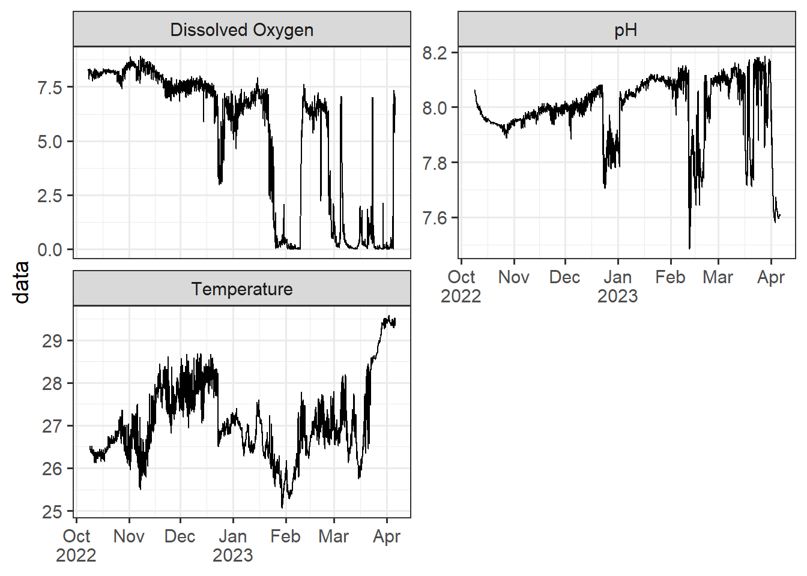
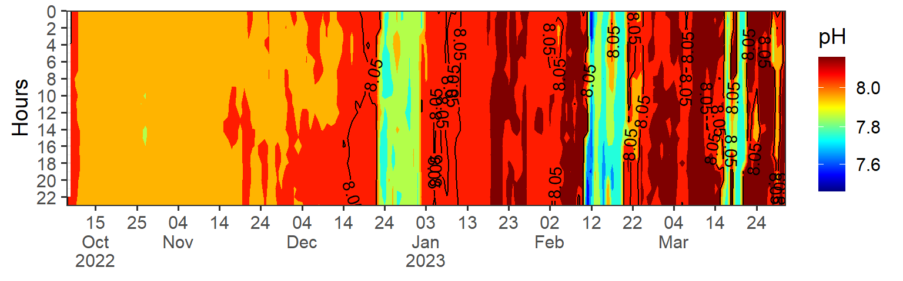
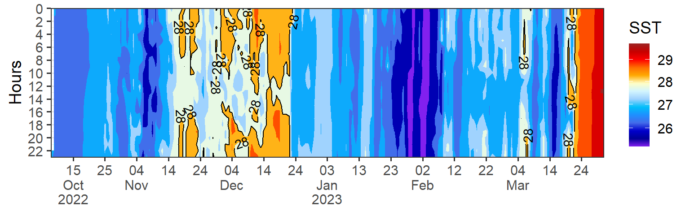
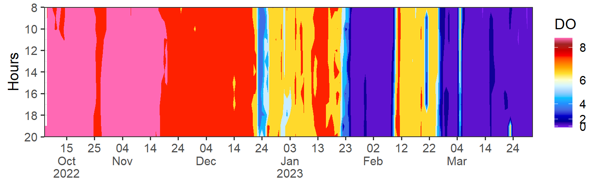

18 High Frequency Data
18.1 Introduction
High-frequency ocean data for temperature, pH, and dissolved oxygen can be obtained through the use of oceanographic sondes. Sondes are instruments that are deployed in the ocean to collect continuous measurements of various parameters. When combined, temperature, pH, and dissolved oxygen data collected can provide valuable insights into oceanic conditions and help researchers study processes such as ocean warming, ocean acidification, and oxygen dynamics.
In this chapter, we will delve into the intricacies of processing and visualizing high frequency data. Our dataset has been sourced from the Pemba Channel, specifically in the vicinity of upwelling events. Our aim is to impart knowledge on the techniques required to analyze and interpret this data effectively. We will adopt a formal approach throughout this chapter to ensure that our readers gain a comprehensive understanding of the subject matter.
18.2 Packages needed
Let’s read the functions in the working directory.The require() function is used to load R packages into the current R session. When the require(tidyverse) code is executed, it checks if the tidyverse package is already installed. If it is not installed, it installs the package and then loads it into the session. If the package is already installed, it simply loads it.
Then we define our color codes that we are going to use
Code
my.colors = colorRampPalette(c("#5E85B8","#EDF0C0","#C13127"))
my.colors2 = colorRampPalette(colors = c("#8220EF", "#000096", "#0000CC", "#446CEA",
"#1F90FF", "#00BFFA","#9FD2FE", "#D3F5FF",
"#FFFFC7", "#FFAA01", "#FF6E01",
"#FE0000", "#C80000", "#9F2323"))
recolor = c("#8220EF", "#000094", "#0000CC", "#4169E2", "#1F90FF", "#00C1FE",
"#9FD2FE", "#D3F5FF", "#FDFFC8", "#FEE131", "#FFAA01", "#FF6E01",
"#FE0000", "#C80000", "#9F2323", "#FF69B4")18.3 Dataset
We are going to use moa_high_frequency.csv, which is a high frequency dataset. This dataset has three columns and a brief description of each column:
date: This column appears to contain date and time values represented asdttm(DateTime) data type. It includes specific timestamps such as “2022-10-08 22:00:00” and “2022-10-08 22:30:00”.variables: This column is of character (chr) data type represents variable measured, which are Temperature, pH and dissolved oxygen.data: This column is of numeric (dbl) data type and contains the actual data values corresponding to the measurements of Temperature, pH and dissolved oxygen.
As the data is in a comma-separated file format, we can easily import it into the session from the working directory by using the read_csv function from the readr package.
The code data = read_csv("data/moa_high_frequency.csv") read and load the high-frequency data from the CSV file into the data variable, and you can further analyze and manipulate the data using R’s data manipulation and analysis capabilities.
We can concise have a summary of a dataset, including its structure and contents with glimpse function. It is particularly useful for large datasets with many variables.
Rows: 25,887
Columns: 3
$ date <dttm> 2022-10-08 22:00:00, 2022-10-08 22:00:00, 2022-10-08 22:30:…
$ variables <chr> "temperature", "ph", "temperature", "ph", "temperature", "ph…
$ data <dbl> 26.520000, 8.061103, 26.520000, 8.061375, 26.500000, 8.05981…This summary provides an overview of the dataset’s structure and the information contained within each column. This dataset contains 25,887 rows and 3 columns. We can use this information to quickly assess the quality and relevance of the dataset for analysis purposes
Further, we can print the data frame and show the first and last five records of the dataset. The FSA::headtail() function is not a built-in function in R. To use the headtail() function with the data object, you would need to ensure that the “FSA” package is installed and loaded.
| date | variables | data |
|---|---|---|
| 2022-10-08 22:00:00 | temperature | 26.520000 |
| 2022-10-08 22:00:00 | ph | 8.061103 |
| 2022-10-08 22:30:00 | temperature | 26.520000 |
| 2023-04-06 04:00:00 | do | 6.970000 |
| 2023-04-06 04:30:00 | do | 6.830000 |
| 2023-04-06 05:00:00 | do | 6.840000 |
We notice that the variables names must be edited, By applying these transformations using the mutate() function and the str_replace() function, the variables names are updated, reflecting the desired replacements.
Code
18.4 Visualizing high frequency data
Once this high frequency dataset has been tidied, it is important to visualize the data to gain insights and identify patterns. Visualizing high frequency data can be challenging due to the sheer volume of data points. However, there are several techniques that can be used to effectively visualize this type of data.
One approach is to use a line chart to plot the data over time. This allows for easy identification of trends and patterns in the data.
Code
data |>
ggplot(aes(x = date, y = data)) +
geom_path() +
facet_wrap(~variables, scales = "free_y", nrow = 2)+
annotate(geom = "rect", xmin = lubridate::dmy_hms(011222000000), xmax = lubridate::dmy_hms(010223000000), ymin =Inf, ymax = Inf, fill = "red", alpha = .2 )+
scale_x_datetime(breaks = "month", labels = scales::label_date_short())+
theme_bw(base_size = 14)+
theme(axis.title.x = element_blank())
Another technique is to use a heat map or density plot to visualize the distribution of the data. This can be particularly useful when dealing with large datasets.
Code
ph = data |>
filter(variables == "pH") |>
mutate(hour = lubridate::hour(date), date = lubridate::as_date(date)) |>
filter(date < dmy(010423))|>
ggplot(aes(x = date, y = hour, z = data)) +
metR::geom_contour_fill()+
metR::geom_contour2(aes(label = ..level..), breaks = 8.05, skip = 10)+
scale_fill_gradientn(colours = oce::oce.colors9A(120), trans = scales::modulus_trans(p = 3), name = "pH")+
scale_y_reverse(breaks = seq(0,24,2), expand = c(0, NA), name = "Hours")+
scale_x_date(date_breaks = "10 day", labels = scales::label_date_short(), expand = c(0, NA))+
theme_bw(base_size = 14)+
theme(axis.title.x = element_blank())
ph
It is also important to consider the scale of the visualization when dealing with high frequency data. Choosing an appropriate scale can help to highlight important features of the data while avoiding visual clutter.
Code
temp = data |>
filter(variables == "Temperature") |>
mutate(hour = lubridate::hour(date), date = lubridate::as_date(date)) |>
filter(date < dmy(010423)) |>
ggplot(aes(x = date, y = hour, z = data)) +
metR::geom_contour_fill()+
metR::geom_contour2(aes(label = ..level..), breaks = 28, skip = 0)+
scale_fill_gradientn(colours = my.colors2(120), trans = scales::modulus_trans(p = 0.001), name = "SST")+
scale_y_reverse(breaks = seq(0,24,2), expand = c(0, NA), name = "Hours")+
scale_x_date(date_breaks = "10 day", labels = scales::label_date_short(), expand = c(0, NA))+
theme_bw(base_size = 14)+
theme(axis.title.x = element_blank())
temp
Code
do = data |>
filter(variables == "Dissolved Oxygen") |>
mutate(hour = lubridate::hour(date), date = lubridate::as_date(date)) |>
filter(date < dmy(010423) & hour >7 & hour < 21) |>
ggplot(aes(x = date, y = hour, z = data)) +
metR::geom_contour_fill()+
metR::geom_contour2(aes(label = ..level..), breaks = 28, skip = 0)+
scale_fill_gradientn(colours = recolor, trans = scales::modulus_trans(p = 2.1), name = "DO")+
scale_y_reverse(breaks = seq(0,24,2), expand = c(0, NA), name = "Hours")+
scale_x_date(date_breaks = "10 day", labels = scales::label_date_short(), expand = c(0, NA))+
theme_bw(base_size = 14)+
theme(axis.title.x = element_blank())
do
Overall, the importance of visualizing high frequency data after tidying cannot be overstated, as it is a critical component of gaining insights and making informed decisions. To see the pattern of the three variables, we can use the patchwork package, which provides a simple and flexible way to arrange and combine multiple plots into a single layout. The package allows to arrange the plots horizontally or vertically using the + operator or the / operators, respectively. For example, here I arranged the heatmap of ph, temperature and dissolved oxygen vertically. T that I have just plotted w
Here’s a step-by-step guide on how to use patchwork